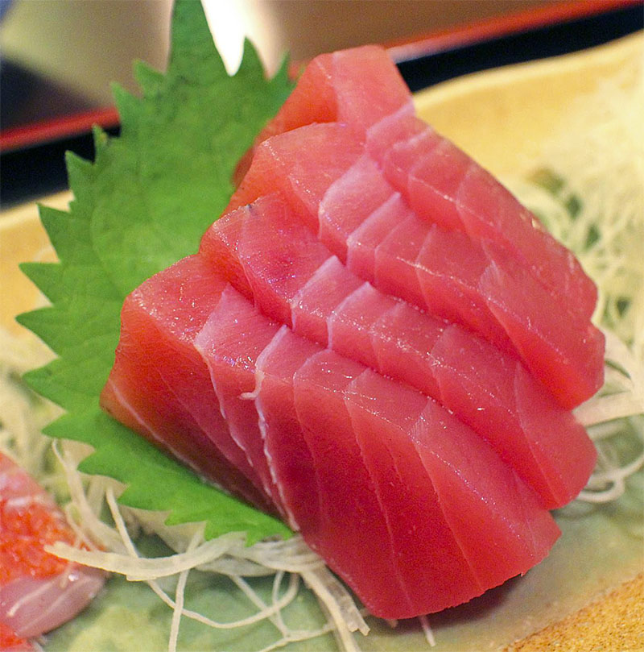

Sashimi

Sashimi consists entirely of fresh, raw fish or seafood cut into thin slices
Ingrediens:
For the dish:
- 300 g - Sashimi grade fish, for example salmon or tuna
- 100 g - Daikon radish (for garnish)
For serving:
- soy sauce
- pickled ginger
- wasabi
Steps:
-
Prepare the Garnish - peel the daikon radish and cut
it into extremely thin, matchstick-like strands. Soak the radish
strands in a bowl of ice-cold water for about 5 minutes to make them
crisp. Drain the water completely and gently pat the radish dry with a
paper towel.
-
Prep the Fish - ensure your sashimi-grade fish is kept very cold
right up until you are ready to cut it. Place the block of fish on a clean,
sanitized cutting board and lightly pat the surface dry with a paper towel
to remove any excess moisture.
-
Slice the Fish - using a long, very sharp knife, cut the fish into
even slices roughly 0.5 cm thick. Pull the blade cleanly through the fish
in a single, smooth motion towards you to avoid tearing or sawing the delicate
flesh.
-
Plate the Dish - arrange a small mound of the crisp daikon radish on
your serving plate. Carefully lay the slices of fish in a slightly overlapping
row, resting them against or next to the radish.
-
Serve - serve immediately while the fish is still cold. Pour the soy sauce
into a small dipping bowl and place the wasabi on the side.
Home